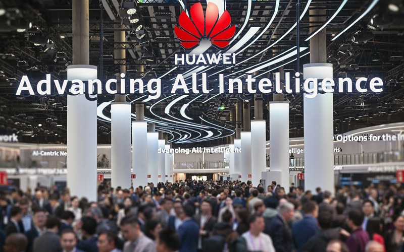
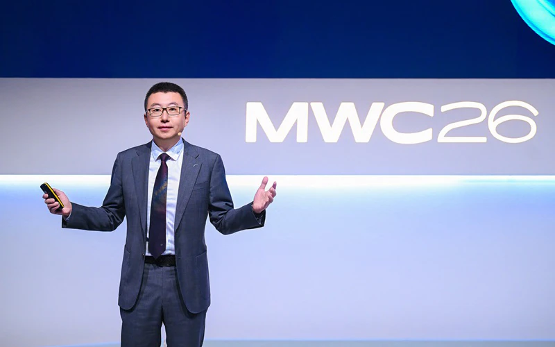

图: 华为 MWC 2026 展台现场 (Hall 1, 1H50) | 来源: Huawei 官方新闻稿
报告摘要: 本报告基于 华为官方新闻稿 及行业权威媒体，全面梳理华为在 MWC 2026 的发布内容。华为以 "Advancing All Intelligence（推进全面智能化）" 为主题，发布了 U6GHz 全场景 5G-A 产品组合、AI-Centric Network 解决方案、SuperPoD 计算集群、NG WAN 架构等核心产品，并提出 "5G-A × AI" 战略，致力于在智能体互联网时代为运营商和行业客户提供领先的网络和计算基础设施。
一、执行摘要
1.1 展会概览
| 项目 | 内容 |
|---|---|
| 展台位置 | Fira Gran Via Hall 1, Stand 1H50 |
| 展会主题 | Advancing All Intelligence（推进全面智能化） |
| 核心战略 | 5G-A × AI、Agentic Network、All Intelligence |
| 发布产品 | U6GHz 产品组合、AI-Centric Network、SuperPoD 系列、Agentic Core |
1.2 华为核心主张
主张一：进入 Agentic Internet 时代
网络将连接数百亿智能体（Agents），而不仅是人类通信，这将开启一个价值十万亿美元的新市场。
主张二：5G-A × AI 融合
运营商可以通过 "5G-A × AI" 重新定义连接价值，从流量变现升级到体验变现和 AI 服务变现。
主张三：三层智能架构
通过服务智能、网络智能、网元智能三层架构，构建面向智能体时代的 AI-Centric Network。
二、核心产品发布
2.1 U6GHz 全场景产品组合

图: 华为高级副总裁李鹏在 MWC 2026 发表主题演讲 | 来源: Huawei 官方
华为发布了全面的 U6GHz（Upper 6 GHz）产品组合，旨在充分释放 5G-A 潜力并为 6G 演进铺平道路。
U6GHz 256 TRX AAU（宏站覆盖）
| 规格参数 | 数值 |
|---|---|
| 天线技术 | ELAA（超大规模天线阵列）+ 数模混合智能波束赋形 |
| 覆盖能力 | 与 C-band 相当 |
| 带宽 | 400 MHz 超大带宽 |
| 下行峰值 | 100 Gbps |
| 上行峰值 | 10 Gbps |
| 下行体验速率 | 10 Gbps |
| 上行体验速率 | 1 Gbps |
U6GHz Small Cell（室内覆盖）
- 支持 400 MHz 超大带宽
- 融合 U6GHz 与所有 Sub-6 GHz 频段
- 简化的设计和部署
- 室内外 AI 应用体验一致性保障
U6GHz Microwave（传输）
- 业界独有全双工技术
- 显著提升承载网带宽和容量
- 满足 5G-A 峰值流量需求
- 为 6G 演进奠定基础
2.2 AI-Centric Network 解决方案
华为发布了增强型 AI-Centric Network 解决方案，通过三层智能架构帮助运营商迎接智能体时代。
| 架构层级 | 功能描述 | 关键能力 |
|---|---|---|
| 服务层 | 多智能体协作平台 | 语音智能体、体验变现智能体、家庭宽带智能体 |
| 网络层 | L4 自动驾驶网络 | 单场景自动化 → 端到端单域自治 |
| 网元层 | 智能化网元创新 | RAN 算法优化、WAN 智能识别、核心网统一意图 |
2.3 SuperPoD 计算集群系列
华为首次在中国以外展示其计算集群和 SuperPoD 产品，提供面向智能世界的算力新选择。
Atlas 950 SuperPoD（AI 计算）
| 规格参数 | 数值 |
|---|---|
| 架构 | "集群 + SuperPoD" 创新架构 |
| 互联技术 | UnifiedBus 超级节点互联 |
| 单柜 NPU 数量 | 64 颗 NPU |
| 最大扩展规模 | 8,192 颗 NPU |
| 应用场景 | 大规模 AI 训练、高并发推理 |
Atlas 850E
- 灵活部署于标准风冷数据中心
- 规模：8 ~ 1,024 颗 NPU
- 支持从小规模推理平滑扩展到集群级推理
- 确保业务敏捷性和快速服务部署
TaiShan 950 SuperPoD（通用计算）
| 规格参数 | 数值 |
|---|---|
| 延迟 | 百纳秒级（hundred-ns-level） |
| 带宽 | TB 级（TB-level） |
| 内存 | 内存池化（memory pooling） |
| 通信方式 | 内存语义通信（memory semantics communication） |
技术亮点：通过 load/store 操作实现跨节点高效数据传输，解决高延迟、数据迁移成本高、协同效率低等关键挑战。
开源开放生态
- openEuler：华为积极贡献领先的开源 OS 社区
- CANN 开源：算子库、加速库、图引擎、编程语言分层解耦开源
- 支持开源项目：PyTorch、vLLM、SGLang、xLLM、verl、Triton、TileLang
- TaiShan 系列：TaiShan 200/500 覆盖高、中、低算力需求，集成 openEuler 和 BoostKit
发布者：华为计算产品线总裁 Seaway Zhang
TaiShan 950 SuperPoD（通用计算）
- 面向通用计算场景
- 高算力、低延迟
- 支撑智能体 AI 进入核心生产系统
其他产品
- Atlas 850E SuperPoD
- TaiShan 500 服务器
- TaiShan 200 服务器
开放生态承诺: 华为表示将继续坚持全面开源开放，与伙伴共建开放计算生态，为世界提供算力的另一种选择。
2.4 Agentic Core 解决方案
华为发布 Agentic Core 解决方案，通过三大引擎加速智能网络的大规模商用。
| 引擎 | 功能 | 解决挑战 |
|---|---|---|
| NE 智能 | 数字身份、智能体注册发现、A2A 会话管理 | 连接实体数量增加 10 倍（从人到物理 AI） |
| 网络智能 | 意图驱动网络、动态资源匹配、策略生成闭环 | 多样化网络体验需求（如 AI 机器人需 100Mbps/20ms） |
| 服务智能 | AISF（服务智能）、沉浸式通信体验、算网融合 | 相比 OTT 提供普惠智能服务 |
2.5 AI 光网络产品组合
华为发布新一代光网络产品和解决方案，采用 "AI for networks" 和 "networks for AI" 双 AI 战略。
| 战略方向 | 应用场景 | 性能提升 |
|---|---|---|
| AI for networks | 智能光纤传感 | 故障定位精度 10 米 |
| Wi-Fi 干扰检测 | 干扰下速率提升 20% | |
| 能耗管理 | 平均能耗降低 40% | |
| O&M 智能 | 识别 60+ 种故障类型 | |
| networks for AI | 光接入 | 千兆下行 + 百兆上行 |
| 光传输 | 传输距离提升 20% | |
| 延迟目标 | 国家 5ms / 区域 3ms / 城域 1ms |
2.6 NG WAN（下一代广域网）架构
华为数据通信产品线总裁 Leon Wang 发布了 NG WAN 架构，聚焦三大方向帮助运营商在智能体互联网时代实现新增长。
多维感知@2H - 精准加密流量识别
- 星络识别引擎（Xingluo Identification Engine）：业界首个加密流量识别引擎
- 加密流量识别准确率：超过 95%
- 用户画像准确率：90%
- 案例：泰国 AIS 借助该方案使英超直播套餐客户增长 3 倍
多维感知@2B - WAN 无损传输
- 无损智能计算板：算力数据零丢包传输，保障计算效率
- 星络无损算法：将训练推理数据转化为不可破解的高维向量
- 支持分布式协同训练推理、存算分离服务
- 案例：中国电信上海与华为共建智能算力网络，百公里远程推理计算效率达 95%
安全与韧性 - 内生网络安全
- 智能内生安全板：实时检测设备文件、内存、进程、流量异常，即时识别阻断入侵
- 智能韧性主控板：40 维知识图谱动态识别路由劫持，关键场景零路由劫持
- 量子安全网络：Xsec 多点动态部署方案，量子专线部署效率提升 60%
- LPUI-Q 量子密钥分发板：业界首个内生 QKD 板，直接插入 NetEngine 8000 路由器，总投资降低 60%+
网络自治 - NetMaster 智能大脑
- 模拟专家分析、策略制定、行动执行
- 实现从被动运维到主动运维的转变
- 7×24 小时网络保护
三、高管演讲与战略解读
3.1 李鹏主题演讲：迈向智能体互联网时代
演讲者: 李鹏，华为高级副总裁、ICT 销售与服务总裁
主题: Accelerating towards the agentic Internet era with 5G-A and AI
核心观点
我们正在进入智能体互联网时代。未来十年，网络不仅连接人，还将连接数百亿智能体。这将推动运营商从提供流量转向提供高价值服务，开启一个价值十万亿美元的新市场。
5G 商用 7 年来，全球 300+ 运营商通过流量变现实现增长。随着 5G-A 成熟，体验变现将更为重要。30+ 领先运营商已推出基于速度、延迟的体验套餐。通过动态资源调度，运营商可提供确定性体验，增强品牌声誉。
消费者: AI 通话服务（转录、翻译、AI 助手），全球 54 亿通话用户；
家庭: 智能家庭服务，加速助手保障游戏/直播确定性速率，网络助手语音优化 Wi-Fi；
企业: 5G-A + AI 融合，柔性制造 AI 工厂可实现秒级响应需求、分钟级排产、小时级交付新产品。
1. 将所有业务、设备、频段演进到 5G-A，构建繁荣网络生态；
2. 将 AI 引入 B.O.M（业务、运营、管理）领域，实现多元化运维服务；
3. 为基础设施引入智能化，支持未来网络架构演进。
3.2 华为三大业务战略
| 业务板块 | 主题 | 核心内容 |
|---|---|---|
| 运营商业务 | AI-Centric Network | 5G-A × AI、Agentic Core、U6GHz、L4 自动驾驶网络 |
| 企业业务 | 行业智能化 | 115 个行业智能展示、SHAPE 2.0 伙伴框架、22 个行业解决方案 |
| 消费者业务 | Now is Yours | 折叠屏、健康健身、移动影像、生产力、创意体验 |
四、技术战略分析
4.1 技术路线对比
| 技术领域 | 华为主张 | 行业趋势 | 竞争差异 |
|---|---|---|---|
| 5G 演进 | 5G-A → 6G，U6GHz 是关键频段 | 全球 7000 万 5G-A 用户，中国 270 城市连续覆盖 | 全场景 U6GHz 产品组合（宏站+微站+微波） |
| AI 融合 | 5G-A × AI，三层智能架构 | AI 手机占新机 50%+，AI 眼镜增长 50%+ | 从网络到服务全栈 AI 化 |
| 智能体网络 | Agentic Internet 时代 | AI Agent 大规模应用即将到来 | Agentic Core 三大引擎解决方案 |
| 计算基础设施 | SuperPoD 系列，全面开源开放 | 万亿参数模型需求激增 | 首次海外展示，提供算力"另一种选择" |
4.2 战略布局意图
- 从连接提供商到智能服务提供商: 华为帮助运营商从卖流量升级到卖 AI 服务
- 构建端到端 AI 基础设施: 从无线接入、光传输到计算集群，全栈布局
- 开源开放对抗封闭生态: 在计算领域强调"另一种选择"，暗示与 NVIDIA 等的竞争
- 抢占 6G 标准制高点: U6GHz 产品组合提前布局 6G 关键频段
五、行业影响评估
5.1 对运营商的影响
- 收入模式变革: 从流量变现 → 体验变现 → AI 服务变现
- 网络投资方向: 5G-A 和 AI 基础设施成为投资重点
- 运营效率提升: L4 自动驾驶网络大幅降低运维成本
- 新商业机会: AI 通话、智能家庭、工业互联网等新服务
5.2 对消费者的影响
- AI 手机普及: 智能体成为手机核心能力
- 沉浸式通信: 通话体验突破语音边界，支持转录、翻译、AI 助手
- 智能家庭: 确定性网络体验保障游戏、直播等关键业务
5.3 对企业的影响
- 柔性制造: AI 工厂实现秒级响应、分钟级排产
- 普惠智能: 运营商提供比 OTT 更普惠的智能服务
- 算力支持: SuperPoD 为 AI 推理和内容生成提供可持续算力
六、数据附录
6.1 关键数据汇总
| 指标 | 数据 | 来源 |
|---|---|---|
| 全球 5G-A 用户 | 7000 万 | 华为官方 |
| 中国 5G-A 覆盖城市 | 270 个 | 华为官方 |
| U6GHz AAU 下行峰值 | 100 Gbps | 华为官方 |
| 全球通话服务用户 | 54 亿 | 李鹏演讲 |
| AI 手机占新机比例 | 50%+ | IDC / 华为 |
| ADN L4 商用部署网络 | 130+ | 华为官方 |
| 数字包容覆盖人口 | 1.7 亿 | 华为官方 |
| 数字包容覆盖国家 | 80+ | 华为官方 |
| 企业业务展示数 | 115 个行业智能 | 华为官方 |
6.2 信源列表
📌 Tier 1 - 华为官方新闻稿
- Huawei Official - AI-Centric Network Solutions for All Intelligence (2026-03-02)
- Huawei Official - SuperPoD AI Infrastructure (2026-03-02)
- Huawei Official - NG WAN Architecture (2026-03-02)
- Huawei Official - MWC 2026 Event Page (2026-03)
📌 Tier 2 - 行业权威媒体
- Total Telecom - Huawei AI-Centric Network (2026-03-03)
- RCR Wireless - Li Peng Keynote (2026-03-02)
- RCR Wireless - Huawei AI Optical (2026-03-03)
- Total Telecom - Huawei Agentic Core (2026-03-01)
- Developing Telecoms - Huawei U6GHz (2026-03-03)
- Telecoms - Huawei U6GHz (2026-03-03)
6.3 展会时间线
华为预告将发布 Agentic Core 解决方案
李鹏发表主题演讲，阐述 "5G-A × AI" 战略
正式发布 U6GHz 产品组合、AI-Centric Network、SuperPoD 系列
展会闭幕，华为展台持续展示 115 个行业智能解决方案